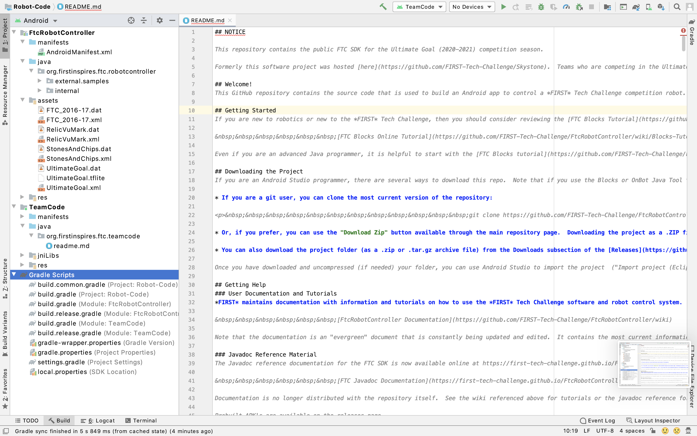

WALL·E
Reminding everyone how to do the most painful installation of their lives.
-
Download the newest version of Android Studio...
-
Get up to date on the Android SDK...
-
Download the Github Repo...
-
Open the folder in Android Studio...
-
Build the code...
To do this, click here to go to the website and click the download button. And, don't worry, this link will open in a new window.
When the file with the hard-drive icon is done downloading, click on it. This will open an Android Studio installer. From there, a window with the Android Studio app icon on the left and your applications folder on the right will apear. Drag Android Studio into the applications folder, and then double click android studio.
Another window will pop up asking you a series of questions about how you want Android Studio to run. Just watch the video and click the buttons that they did- they seem to know what they're doing.
Okay- now we should install the version of Android that the phones are using. To do this, click on the configure button at the bottom of the home page. From here, there should be a dropdown that should appear. Click the 'SDK Manager' option from the Dropdown.

A window should appear displaying different versions of Android. We have to find the version of Android that we are running on the phones. Clearly we are running the newest version of Android on our phones because we are such a modern team in a modern competition, so install Android version 10.0.0. We are running Android version 7.1.1 on the phones, so click that box, and then press the apply button at the bottom.


Go to the FTC robot code repository by clicking here. This is the 6.0 release page of the repository. Find the section that says 'Source Code (zip)', and click on that. This should download a zip file containing the source code onto your computer.


Unzip this file, move it to your desktop and name it 'Robot-Code'.

Open Android Studio. On the start screen, click the 'open existing project' button. Find the 'Robot-Code' folder and select it. This will then open the project on Android Studio.


On the bottom left of android studio, click on the 'build' button. If asked to update Gradle, click the yes button.

Ask Mr. Kwark to plug in the phone to your computer, and, if the phone appears in the top right corner, you should be perfect!